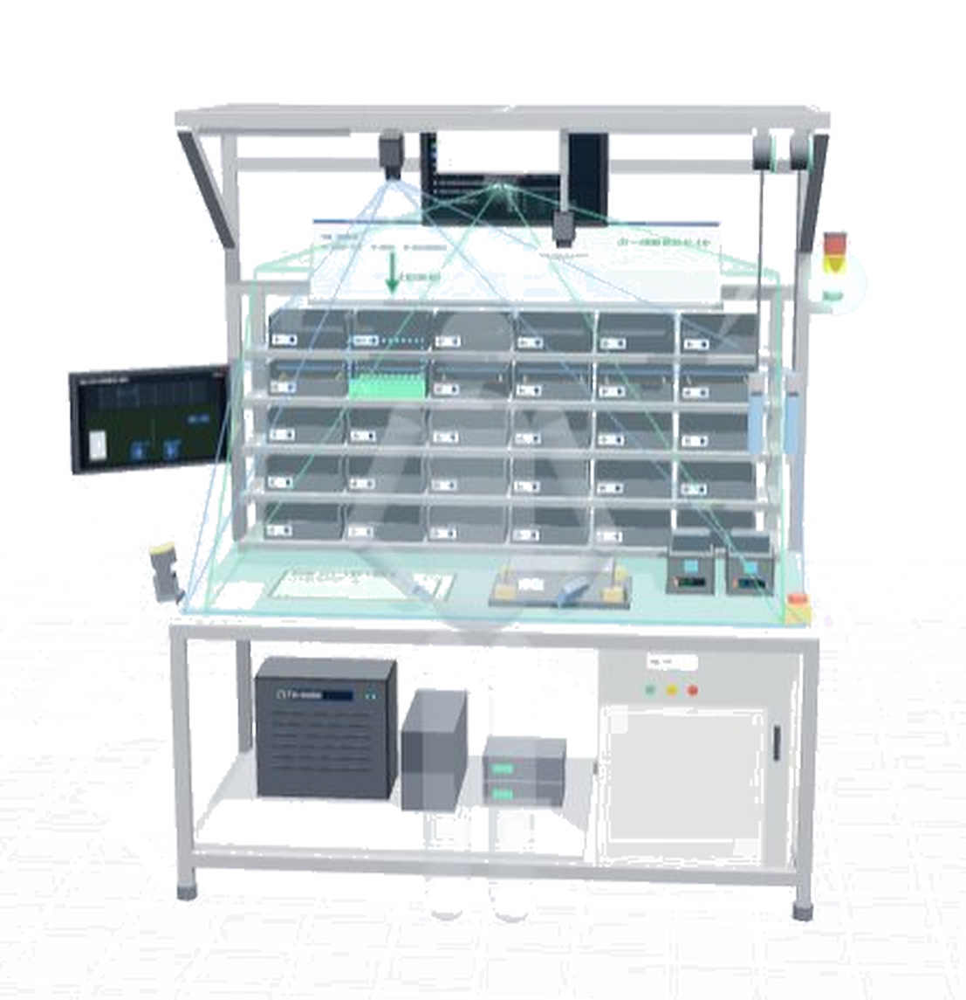

HFS VINA INNOVATION TEAM
PHÒNG PHÁT TRIỂN CÔNG NGHỆ & TỰ ĐỘNG HÓA
THUYẾT MINH THIẾT KẾ CONCEPT
THUYẾT MINH THIẾT KẾ CONCEPT
| Số bản vẽ: | HFS-PAS-2026-01 |
|---|---|
| Phiên bản: | Rev01 Concept · Tác giả: TheQuang |
| Ngày lập: | 18/11/2026 |
| Tham chiếu: | Tiêu chuẩn Nhà máy OKI Japan (Hải Phòng) |
TRẠM LẮP RÁP CHIẾU SÁNG THÔNG MINH PAS (PROJECTION ASSEMBLY SYSTEM)
Hệ thống dẫn hướng quang học Workguide SOP kết hợp Camera AI Poka-Yoke & Súng siết vít kiểm soát lực tích hợp MES/SPC

THÔNG SỐ KỸ THUẬT TIÊU CHUẨN
- Kích thước trạm: 1800 × 900 × 2200 mm (Khung nhôm chuẩn phòng sạch ESD)
- Máy chiếu quang học H1: 4000 ANSI Lumens, chiếu khung sáng, SOP và viền đồ gá
- Camera AI kép: CAM-1 (5MP 30 FPS theo dõi tay) · CAM-2 (12MP kiểm tra Poka-Yoke)
- Súng vặn vít lực: Tự động ngắt lực chuẩn 0.50 N·m ±10%, đếm đủ số vít chu trình
- Bộ cấp vít tự động: Cấp vít M3 liên tục, cảm biến quang báo phôi sẵn sàng
- Máy tính điều khiển: IPC công nghiệp on-premise, liên động PLC đèn tháp & MES/SPC
1. MỤC ĐÍCH DỰ ÁN (PROJECT OBJECTIVES)
Chuẩn hóa 100% quy trình lắp ráp sản phẩm phức tạp nhiều chi tiết, loại bỏ hoàn toàn rủi ro sai sót do con người (Human Error) bằng công nghệ chiếu sáng trực quan Workguide và camera AI Poka-Yoke; tích hợp súng siết lực tự động kiểm soát chất lượng siết vít toàn diện trước khi chuyển công đoạn.
2. HIỆU QUẢ THỰC TẾ & ROI ĐẠT ĐƯỢC
- Triệt tiêu lỗi lấy nhầm linh kiện: Giảm 99.8% lỗi nhờ AI Hand-Tracking quét liên tục 30 FPS.
- Rút ngắn 35% thời gian đào tạo: Công nhân mới thao tác thành thạo ngay trong ca đầu mà không cần tài liệu giấy.
- Kiểm soát lực siết 100%: Đo mô-men xoắn tự động (0.50 N·m ±10%), đếm đủ số vít mới xác nhận hoàn tất.
- Truy xuất nguồn gốc thời gian thực: Lưu trữ Serial Number, biểu đồ lực và ảnh AI kiểm tra lên máy chủ MES/SPC.
3. QUY TRÌNH 7 BƯỚC TIÊU CHUẨN (SOP)
- Bước 1: Quét mã 2D trên phiếu công đoạn, IPC tải BOM và SOP v3.2 từ MES.
- Bước 2: Máy chiếu rọi khung sáng vào khay B2, chiếu mũi tên hướng dẫn thao tác.
- Bước 3: Camera AI xác nhận tay vào đúng ô B2 (khóa bước cảnh báo còi nếu tay vào sai ô B3).
- Bước 4: Đặt khung đỡ vào đồ gá theo viền sáng chiếu, cảm biến đồ gá S1 xác nhận ON.
- Bước 5: Súng siết lực dẫn hướng 4 vị trí vít, kiểm soát lực đạt chuẩn 0.50 N·m.
- Bước 6: Camera AI CAM-2 chụp ảnh ngoại quan kiểm tra đủ 4 vít và bề mặt sản phẩm.
- Bước 7: Ghi hồ sơ hoàn thành lên MES/SPC, đèn tháp xanh, in tem Serial chuyển trạm.